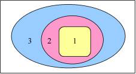
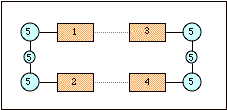

Basic philosophy¶
The QUILD program [1-2] has been developed for enabling calculations through multi-level approaches, in which different computational treatments are used for different regions of the system under study. The benefit of our multi-level approach is not only that it can be used to make the calculations cheaper and therefore feasible, but also that the best method for any type of interaction can be used as we need for DNA (vide infra). For describing DNA, we use one DFT functional for treating the complete system, and another for \(\pi\)-stacking between the DNA bases. This is achieved by making the definition of the regions flexible, i.e. there is no need to have a layered structure as in the ONIOM approach. An arbitrary splitting of the total system into different regions is permitted with, therefore, possibly overlapping regions; this resembles a quilt, hence the name of the program.
The different treatments currently possible are based on either quantum mechanics (QM) or force field molecular mechanics (MM). The MM part is provided through the NEWMM program that is included within the ADF [3-4] program package since the 2006.01 version. Density Functional Theory [5-7] is provided by the ADF program, while an interface for the ORCA program [ORCA] is available for inclusion of Hartree-Fock (RHF/UHF), Möller-Plesset (MP2) or semi-empirical (e.g. AM1, PM3) calculations. New in the 2009.01 version is the inclusion of DFTB (for Density Functional Tight Binding), Mopac (semi-empirical, e.g. PM6), and a generic (QM) program that allows the user to apply his/her own program. In all these cases, the other programs are used as black-box programs to deliver the energy and gradient, i.e., QUILD writes the inputfiles, runs the black-box programs, collect the data, makes new coordinates, and repeats this process until the geometry is optimized.
The application of multi-level (QM/QM or QM/MM) approaches within computational chemistry studies is ever more often used, since it permits to use a highly accurate method for the most important region while treating the interactions with the surrounding regions at a lower, yet sufficiently accurate method. The QM/MM setup (see Figure), where only the region of interest (region 1, in yellow) is treated with quantum chemistry methods while the interactions with and within the surrounding regions is described with classical molecular mechanics force fields, is the computationally most economical multi-level approach. Its accuracy and applicability depend largely on the accuracy and availability of force field parameters for the system under study. Specialized force fields are available for certain classes of chemical systems, such as the AMBER95 force field [8] for proteins and nucleic acids, which is included within the ADF program package using the NEWMM program. However, the treatment of large biochemical systems containing thousands of atoms with QUILD is not to be advised due to the making of the adapted delocalized coordinates, involving a diagonalization step that is not feasible for systems with more than ca. 700 atoms (estimated). Treating large biochemical systems are best performed by the QM/MM scheme [9-11] in ADF.
Because of the computational efficiency, the availability of basis sets for the whole Periodic System, and the generally accurate results, Density Functional Theory (DFT) has become the method of choice for the majority of recent computational chemistry studies and can these days almost routinely be used for relatively large system sizes of up to hundred of atoms (the largest system used with ADF in single-point calculations contained ca. 1200 atoms; the largest system used within geometry optimizations contained ca. 700 atoms) [12-20]. However, one must always remain cautious with the choice of DFT functional and/or basis set, and make sure that the particular functional is able to give a correct description for the interactions that are important for the system under study. For instance, the performance of functionals that include the recent OPTX exchange functional [21] is superior to those containing Becke88 exchange [22], for instance for the accuracy of geometries [23-24], spin state splittings [25-26], reaction barriers [23,27-28], or zero-point vibrational energies [23]. As the improvements can be linked directly to the specific formulation of the OPTX functional [26,29] and its resulting improved performance for atomic exchange energies [21], one would naively think that inclusion of the OPTX functional would always lead to improved performance. Unfortunately, this is not the case for weakly bound systems, as shown recently for hydrogen-bonding [30] and \(\pi\)-stacking [31] in DNA. Moreover, a functional that performs well for hydrogen-bonding interactions (BP86 [22,32]) [30,33-37] does not necessarily give equally good results for \(\pi\)-stacking [31]. As a result, at present there does not seem to be a DFT functional that is equally accurate for hydrogen-bonding, \(\pi\)-stacking and intramolecular interactions. Therefore, for a study on the structure of DNA duplexes, the multi-level QM/QM approach [2] is needed with one DFT functional for the description of hydrogen-bonding interactions, and another for the description of \(\pi\)-stacking, which can be exploited within the QUILD scheme.
In the Figure above, a schematic structure of DNA is presented with the bases (regions 1 to 4, in orange), and sugars and phosphate backbone (region 5, in cyan). Since BP86 works well for intramolecular interactions and hydrogen-bonding interactions, but not for \(\pi\)-stacking, BP86 is used for the whole system, and for the \(\pi\)-stacking its interactions are replaced by LDA.